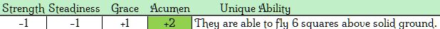

Still furry from their feline ancestry, Presma are well adapted to their individual environment of origin. Being found in areas as differing as tropics to tundras, there is not much the cunning presma wouldn’t try to overcome and adapt to. These agile bipedal cats also feature a heightened sense of hearing and vision to boot, making them an excellent employ for hunting or rouge work.
